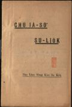
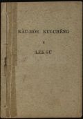
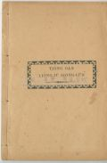
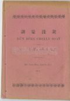

Languages
台文
｜
中文
｜
日本語
｜
English
字體
小
｜
中
｜
大
首頁
/
白話字數位典藏
白話字數位典藏全文檢索
查詢模式
選擇年代
清國時代(1885-1895)
日本時代(1895-1945)
戰後(1945-1969)
1885-1895
1896-1905
1906-1915
1916-1925
1926-1935
1936-1945
1946-1955
1956-1965
1966-1969
1970-1980
1980-1990
1990-2000
2000-2010
2010-
選擇文類
詩
散文
小說
戲劇
傳記
選擇作者
陳清忠
陳清義
編輯部
柯設偕
吳天命
明有德
偕叡廉
周天來
劉華義
王守勇
林茂生
陳添旺
柯維思
王占魁
賴仁聲
陳瓊琚
雪峰逸嵐
吳清鎰
郭水龍
蕭樂善
許水露
葉金木
陳金然
章王由
廖得
鄭連坤
潘道榮
楊士養
梁秀德
劉約翰
周淑慧
高金聲
林燕臣
黃六點
蔡愛義
許有才
主筆
巴克禮
郭朝成
陳鳩水
張基全
陳明清
陳能通
拾穗生
顏振聲
卓恆利
傳道局
胡文池
劉主安
鄭兒玉
Google Search
Yahoo Search
全部
刊名
標題
標題(教羅)
全文
全文(教羅)
作者
第1頁，共93頁(共1,848筆資料) 0.56082105636597sec
1
2
3
4
5
...
93
To Page
GO
文字列表
圖文列表
排序
日期
文類
刊名
作者
影像

[不詳 台大楊雲萍文庫白話字史料(編修) 文類-傳記 作者--/-]
(11)
主耶穌事略 [ Chú Iâ-so͘ Sū-lio̍k ]
...
[1917-1 台大楊雲萍文庫白話字史料(編修) 文類-小說 作者--/-]
(37)
Te-tì的鈕仔 (Teddy's button) [ Te-tì ê Liú-á ]
...

[1925-1 台大楊雲萍文庫白話字史料(編修) 文類-散文 作者--/-]
(36)
教會歸正的歷史 [ Kàu-hoē Kui-chèng ê Le̍k-sú ]
...
[1928-1 台大楊雲萍文庫白話字史料(編修) 文類-散文 作者--/-]
(16)
成語集 [ Sêng-gú Chi̍p ]
...

[1914-1 台大楊雲萍文庫白話字史料(編修) 文類-小說 作者--/-]
(35)
長遠兩友相論 (Two Friends) [ Tiông oán Lióng-iú Siong-lūn ]
...
[1903-1 台大楊雲萍文庫白話字史料(編修) 文類-散文 作者--/-]
(27)
訓蒙淺說 [ Hùn Bông Chhián Soat ]
...
[1920-1 台大楊雲萍文庫白話字史料(編修) 文類-散文 作者--/-]
(52)
先知的教示 [ Sian-ti ê Kà-sī ]
...
[1922-1 台大楊雲萍文庫白話字史料(編修) 文類-詩 作者--/-]
(62)
孩童聖歌 [ Hâi-tông Sèng-ko ]
...

[1911-1 台大楊雲萍文庫白話字史料(編修) 文類-散文 作者--/-]
(46)
訓蒙淺說 (II) [ Hùn Bông Chhián Soat (II) ]
...
[1906-1 台大楊雲萍文庫白話字史料(編修) 文類-詩 作者--/-]
(66)
頌主神詩(客語) [ Siùng Chú Shîn Si ]
...
[1897-2 台南府城教會報 文類-散文 作者--/-]
蕭寶珠 [ Siau Pó-chu ]
蕭寶珠 1897.02 143 卷 p.9-10 前月教會報有講起Pó-chu已經脫離賊ê手倒去in厝。照伊講hit-tia̍p伊予賊掠ê時有差不多60人圍伊，代先掠伊到Tē-jī-pêⁿ，後來掠去大坪頂。 In踮佇遐無厝通蹛， kan-ta蹛佇一个亭仔，四面無壁。原本一日食3頓，後來較無，常常枵飢失頓。 佇遐差不多3日久，日本兵chiàⁿ來拍。 Hit時土匪走紲āiⁿ伊去， 毋過āiⁿ無法，兩人平平跋落溝，寶珠teh做下底。 Hiah-ê賊就放伊佇遐做in走。伊踮佇遐20日久無通蓋也無通食，因為伊ê腳疼所以袂走；hit時只有一个賊兩三日就提寡蕃薯來予伊食。佳哉有日...
[1897-4 台南府城教會報 文類-詩 作者--/-]
大福氣 [ Toā hok-khì ]
大福氣1897.04 145 卷 p.301細漢囡仔佮大人蹛世間暫時，向望佇天無閣相離這算大福氣，永遠大大福氣，
[1897-5 台南府城教會報 文類-散文 作者--/-]
雜居地 [ Cha̍p-ku-tē ]
雜居地1897.05 146卷 p.37 Tī西曆5月第8號，就是中曆4月初7日已經到限；hit日ê了後tiàm-tī台灣ê人攏算做日本ê百姓。總是咱m̄免掛慮驚了過hit日in beh liâm-piⁿ 設甚mih新款愛苦楚百姓ê法度。量必敢ê差不多親像這tia̍p ê 款，卻是向望看會tit thang那久那快活。 只有分別chia ê阮外國人所企起通常ê所在。In 日本已經有出告示講若有人猶原愛屬清國m̄ 愛日本藉，in iáu-kú thang toà tī台灣算做外國人，總是bē tit thang猶原逐所在企起，的確得親像阮tiàm tī定著ê所在，叫做雜居地。台...
[1897-5 台南府城教會報 文類-散文 作者--/-]
西爿交戰 [ Se-pêng kau-chiàn ]
西爿交戰1897.05 146 koàn p.37-38 歐羅巴洲ê大國較濟攏是拜上帝ê國。只有土耳其國是屬佇回回教ê。 毋過伊所管轄ê百姓幾nā族是信主ê百姓，常常予土耳其國ê皇帝真窘逐。差不多40年前俄羅斯國ê皇帝起兵愛拍土耳其；hit時大英國kap大法國毋甘願，就去uī土耳其，佮俄羅斯相刣嶄然久，到路尾俄羅斯無法伊著來和。 Hit-tia̍p土耳其阮阮救，伊就甘願品後來的確beh好款待chiah-ê信主ê百姓。後來攏無照伊ê話，猶原是歹款待in；雖然in無犯法伊猶過差兵害死男婦老幼幾nā萬人。 Hit時in擋袂tiâu，幾nā所在有反。 俄羅斯國閣再起兵去beh救in；相刣幾n...
[1897-5 台南府城教會報 文類-散文 作者--/-]
論請本地ê牧師 [ Lūn chhiáⁿ pún-tē ê Bo̍k-su ]
論請本地ê牧師(巴牧師記--ê)1897.05 146卷 p.38-40 今年春會聚集ê時，有5个同會入這个公稟，講in愛請牧師。 這5个 同會就是府城，木柵，柑仔林，岡仔林，Poah-bé。照in講in年年歡喜題兩百銀做牧師ê束金佮所費，就是內山四位ê教會逐个題$30，府城題$80，計共$200。牧師著踮佇木柵徛家，照時去巡hiah-ê教ē。所題hit兩百箍算是新題ê，頂年所出傳道先生ê束金猶原年年著出，牧師ê薪金著另外題。因為牧師踮佇木柵，佇遐毋免請傳道先生，通用hit批錢請一人來顧禮拜堂。 Hit-tia̍p大ē聽了真歡喜，大家peh起來感謝上帝。也派三人，就是嘉義ê長老N̂g S...
[1897-8 台南府城教會報 文類-散文 作者--/-]
青盲學 [ Chhiⁿ-mî-o̍h ]
青盲學1897.08 149卷 p.59 Tī 這近日有接著日本 ê每日新聞雜報；其中有講起音樂會 ê 事情，今 ài將較要緊ê 大意摘起來報hō͘ 逐家知。咱台南府幾年前甘牧師設一間訓瞽堂 beh 教青盲人學讀冊，亦有叫幾若個青盲囡仔來讀。照甘牧師 ê意思ài差幾個去日本 ê 青盲學thang讀較深，向望後來較大路用；m̄-kú 無夠額所費。有寫批問台北teh 管學 ê 官看怎樣。這個管學ê 官無偌久倒去日本有講起這層事；有一個青盲 ê 樂師聽見大大體貼這個事誌，就舉議著召音樂會聚集來作樂hō͘人聽，所趁 ê 錢攏幫贊台南青瞑囡仔。所以台灣管學ê 官佮幾若位 ê 先生，也有西國ê 先生...
[1897-8 台南府城教會報 文類-小說 作者--/-]
兩人替我死 [ Nn̄g-lâng thè goá sí ]
兩人替我死1897.08 149卷 p.63-64 Tī 大英國有一所在近倚海墘，某日有兩人tī-hia做伙企--teh,談論一層事。一個teh
[1897-8 台南府城教會報 文類-詩 作者--/-]
新翻譯的詩 [ Sin hoan-e̍k ê Si ]
新翻譯的詩1897.08 149卷 p.641.耶穌時常佇我身邊，實在疼我到極，情願離開天頂富貴，顧阮細子盡力。2.你的面貌榮光燦爛，近倚，我看bē見，雖罔細聲kap我講話，我聽攏無入耳。3.
[1897-9 台南府城教會報 文類-傳記 作者--/-]
Sun-tîm-to [ Sun-tîm-to ]
Sun-tîm-to1897.09 150 卷 p.69-70Tī大德國ê南爿撒克斯省德斯丁城，有一人名Sun-tîm-to，伊tī西曆1700年就是中國康熙ê時陣出世。伊ê祖上是做德國ê大官員，入救世教ê人；伊本身自細漢就真敬虔熱心拜上帝。伊也是大才調博學ê人，入出名書院讀冊濟濟年，bat幾若國ê文字腔口；所讀ê冊雖然真濟樣，若是伊致意專就是真理ê冊。伊ê親戚真ài伊著學習國法律例ê冊，thang出身去做官來世襲in序大人ê官爵，得著富貴名聲。若是Sun-tîm-to立志ài傳道救人。到1、20歲就出書院，去法國遊歷；21歲倒轉去in本城德斯丁。當時Mô͘-lia̍p-oá教會ê人，為著道理...
[1897-9 台南府城教會報 文類-小說 作者--/-]
真理ê譬喻 [ Chin-lí ê phì-jū ]
真理ê譬喻1897.09 150 卷 p.70-71 中國一个人有捌講：論到我脫離罪惡，來得著重頭生hit層事，有通譬喻親像一個人跋落土窟真深，家己袂得出來； 佇遐哀哀叫，直直向望看有一个朋友beh拖我起來。拄拄teh想hit時看見窟ê頂面有一个老先生倚來，伊ê頭毛白白，屬佇尊貴ê人款。伊看落來，紲出聲teh講：我ê囝這tah是悽慘ê所在。我應伊講，實在有影我艱苦到極，請你伸手牽我出來。 Hit-ê老先生應講，我ê囝我就是孔子，你若從前捌讀我ê冊，紲趁我ê教示，就你毋免到這个艱苦ê所在。我就應伊講，我ê老父你ê話真著，總是你kiám無法度通救我？講了閣看這个孔子已經去lah，無法伊。停無偌久閣...
第1頁，共93頁(共1,848筆資料)
1
2
3
4
5
...
93
To Page
GO
數位典藏國家型科技計劃
拓展台灣數位典藏計畫
版權所有 國立台灣師範大學 台灣文化及語言文學研究所©2008
10610 台北市和平東路一段162號│TEL 02-7734-5516│Fax 02-2358-2461
計劃簡介
典藏特色
執行架構
計畫典藏數位化流程
成員介紹
台灣白話字發展簡介
巴克禮牧師與《台灣教會公報》
廈門話字典-杜嘉德
白話字教學-打馬字
中國南方白話字發展
台灣基督教長老教會簡表
台灣基督教長老教會教會歷史委員會
《北部台灣基督長老教會教會ê歷史》
關於陳清忠
白話字文學：台灣文學的早春